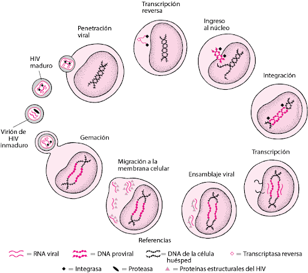

Breve introducción sobre el VIH
La infección por VIH
(virus de la inmunodeficiencia humana) es una pandemia desafiante que ha llevado a la creación de tratamientos efectivos para permitir a las personas vivir vidas saludables y largas. Sin embargo, el VIH sigue siendo una carga significativa para la salud pública debido a su naturaleza altamente mutagénica, la dificultad para desarrollar una vacuna efectiva y las complejidades sociales y culturales que rodean la prevención y el tratamiento. Además, la variabilidad en la presentación clínica y la respuesta individual a los tratamientos plantea importantes desafíos en la gestión de la infección. A continuación se explorarán algunos de estos temas para comprender mejor la complejidad del VIH y cómo podemos abordarlos en el futuro. (Centros para el Control y la Prevención de Enfermedades, 2022)
El VIH se adhiere a las células T y penetra en ellas mediante moléculas
CD4+ y receptores de quimiocina
(Cachay, 2021).

Una vez dentro, el virus libera ARN y enzimas para replicarse mediante la copia del ARN para crear ADN proviral. Sin embargo, los errores pueden generar mutaciones y resistencia a los antirretrovirales. El ADN proviral se integra al ADN del huésped y se duplica con él. El ADN proviral se transcribe a ARN y se traduce en proteínas virales como glucoproteínas 41 y 120. Estas proteínas se ensamblan en viriones de VIH y brotan de la superficie celular en una envoltura de membrana celular humana modificada, lo que aumenta la carga viral.
La proteasa del VIH escinde las proteínas virales y convierte el virión inmaduro en un virión maduro y contagioso. La complejidad y alta tasa de mutación del VIH dificultan el tratamiento de la infección. La mayoría de los viriones en el plasma son producidos por linfocitos T CD4+ infectados, algunos de los cuales se convierten en un reservorio silencioso del VIH. Durante la infección moderada a grave, se producen y eliminan entre 108 y 109 viriones diarios. El VIH puede sobrevivir en el plasma durante 36 horas, dentro de una célula durante 24 horas y en estado extracelular solo 6 horas. La replicación constante del VIH provoca mutaciones frecuentes que pueden generar cepas resistentes a los fármacos, lo que puede llevar al sida debido a la destrucción de los linfocitos T CD4 y la inmunidad defectuosa resultante.
La infección por VIH tiene dos consecuencias principales: daño al sistema inmunitario y activación de la respuesta inmune. La depleción de linfocitos CD4+ se debe a la replicación del VIH, citotoxicidad mediada por células y lesiones del timo, y su velocidad de destrucción se correlaciona con las concentraciones de VIH. Cuando los recuentos de CD4 caen por debajo de 200/mcL, se pierde la inmunidad mediada por células, lo que permite que patógenos oportunistas se reactiven y causen enfermedades clínicas. (Soto Ramírez, 2004)
Además, la respuesta de anticuerpos a nuevos antígenos disminuye a medida que los recuentos de CD4 disminuyen. La elevación anormal de la activación inmunitaria puede ser causada por la absorción de componentes de bacterias intestinales, lo que contribuye al agotamiento de CD4+ y a la inmunosupresión por mecanismos que aún no están claros. En resumen, la infección por VIH tiene un impacto negativo significativo en el sistema inmunitario y la salud en general.
El VIH infecta células monocíticas no linfoides, como células dendríticas, macrófagos y microglía, causando enfermedades en diferentes órganos. Las cepas de HIV pueden tener una estructura genética diferente en compartimentos como el sistema nervioso y el aparato genital, lo que indica adaptación y selección específicas en esos lugares. Los niveles y patrones de resistencia del VIH pueden variar independientemente de los encontrados en el plasma.
Durante las primeras semanas de infección por VIH, el sistema inmunológico humano lucha contra el virus con respuestas humorales y celulares. Aunque se producen anticuerpos contra el VIH en la mayoría de los pacientes, no son suficientes para controlar el virus debido a su rápido cambio y adaptación. La inmunidad celular es más efectiva en controlar la carga viral, pero solo en un pequeño porcentaje de pacientes. (Alcamí & Coiras, 2011)
Después de alrededor de 6 meses, la carga viral se estabiliza en un nivel que varía ampliamente entre los pacientes, pero en promedio oscila entre 30,000 y 100,000/mL. Un nivel alto de carga viral aumenta el riesgo de desarrollar sida y enfermedades oportunistas, especialmente cuando el recuento de CD4 es bajo.
El riesgo de desarrollar infecciones oportunistas y enfermedades relacionadas con el sida depende del recuento de CD4 y de la exposición a microorganismos patógenos potencialmente oportunistas. Un recuento de CD4 inferior a 200/mcL aumenta el riesgo de neumonía por Pneumocystis jirovecii, encefalitis por toxoplasma y meningitis criptocócica, mientras que un recuento inferior a 50/mcL aumenta el riesgo de infecciones por citomegalovirus y complejo Mycobacterium avium.
En pacientes no tratados, el riesgo de progresión a sida o muerte aumenta en un 50% por cada aumento de 3 veces en la concentración plasmática de RNA del VIH. El riesgo de progresión a sida oscila entre 1 y 2% por año en los primeros 2 o 3 años de la infección y entre 5 y 6% por año a partir de entonces. En general, sin tratamiento, casi todos los pacientes con VIH desarrollan sida. (Cachay, 2021)
(ONUSIDA, 2021)
En México:
Tasa de mortalidad por el VIH según entidad federativa de residencia habitual de la persona fallecida (2020) Por cada 100 mil habitantes por entidad federativa
(Instituto Nacional de Estadística y Geografía, 2021)
Casos de VIH según año de diagnóstico (México, 2010-2021)
(Instituto Nacional de Estadística y Geografía, 2021)
La terapia antirretroviral (TAR) es el enfoque para tratar la infección por VIH. Consiste en una combinación de medicamentos contra el VIH que se deben tomar diariamente y que no curan la enfermedad, pero pueden ayudar a prolongar la vida y mejorar la salud de las personas que la padecen. Además, el tratamiento también puede reducir las posibilidades de transmisión del VIH.
El VIH ataca y destruye las células CD4 del sistema inmunitario que son importantes para combatir las infecciones y cánceres relacionados con el VIH. Los medicamentos contra el VIH evitan que el virus se replique, reduciendo su concentración en el cuerpo (carga viral) y permitiendo al sistema inmunológico recuperarse y producir más células CD4. Aunque aún haya algo de VIH en el cuerpo, el sistema inmunológico es lo suficientemente fuerte como para combatir infecciones y cánceres relacionados con el VIH.
Además, los medicamentos también reducen el riesgo de transmisión del VIH. La meta principal del tratamiento es alcanzar una carga viral indetectable en la sangre, lo que significa que es demasiado baja para ser detectada. Si una persona mantiene una carga viral indetectable, no hay riesgo de transmitir el VIH a sus parejas sexuales seronegativas.
Es crucial que las personas con VIH comiencen a tomar medicamentos lo antes posible, especialmente si están en las primeras etapas de la infección o tienen afecciones relacionadas con el SIDA. Además, las mujeres seropositivas embarazadas deben empezar a tomar medicamentos contra el VIH de inmediato si aún no lo están haciendo.
Existe una amplia variedad de fármacos disponibles para la terapia contra el virus de inmunodeficiencia humana (VIH), los cuales se dividen en siete categorías según su modo de acción. La elección del régimen terapéutico para la infección por VIH se basa en las necesidades individuales de cada paciente. Por consiguiente, las personas que son VIH positivas y sus profesionales de atención médica tienen en cuenta una multitud de factores al elegir un régimen, incluyendo la posible aparición de efectos secundarios y la probabilidad de interacciones medicamentosas entre los distintos fármacos antivirales.
El tratamiento con medicamentos contra la infección por el VIH es crucial para mantener la salud de las personas seropositivas y prevenir la transmisión del virus. Aunque algunos medicamentos pueden causar efectos secundarios, estos son generalmente manejables y el cumplimiento terapéutico reduce el riesgo de farmacorresistencia. Los proveedores de atención médica también revisan cuidadosamente las posibles interacciones medicamentosas antes de prescribir un régimen de tratamiento. A medida que mejora el tratamiento del VIH, se vuelven menos probables los efectos secundarios. (National Institutes Of Health, 2021)
Para el pronóstico, se realizó un estudio que recopiló información de 12,574 pacientes adultos con VIH que iniciaron terapia antirretroviral de alto grado de actividad (HAART) entre junio de 1997 y julio de 1998, y se les dio seguimiento por un total de 24,310 años-persona. El análisis estadístico fue complejo debido a las diversas características de la enfermedad y su tratamiento, incluyendo la toxicidad de los medicamentos, la morbimortalidad al inicio del tratamiento y la limitada extrapolación de los datos. Se identificaron 10 variables potencialmente relacionadas con el pronóstico, de las cuales 5 resultaron significativas: recuento de linfocitos CD4, carga viral, edad, grupo de riesgo y estadio clínico. Se desarrolló una escala pronóstica para predecir la probabilidad de muerte o evento definitorio de SIDA, que varía desde una mortalidad del 0,8% a 3 años para pacientes menores de 50 años sin uso de drogas endovenosas, con un recuento CD4 mayor o igual a 350/mm3, carga viral menor de 100,000 copias/ml y en estadio clínico A o B del CDC, hasta una mortalidad del 43% a 3 años para pacientes de 50 años o más, con CD4 menor de 50/mm3, carga viral de al menos 100,000 copias/ml, uso de drogas endovenosas y en estadio clínico C del CDC.
Los resultados indicaron que el recuento de CD4 al inicio de la terapia fue el factor más importante relacionado con el pronóstico, y que la mortalidad era similar para pacientes que iniciaron la HAART con recuentos de CD4 superiores a 350/mm3 y para aquellos que lo hicieron entre 200 y 349 CD4/mm3. Sin embargo, ambas curvas fueron significativamente superiores a las curvas de los pacientes con recuentos de CD4 inferiores. La carga viral también se correlacionó con un mal pronóstico, y los pacientes con una carga viral mayor o igual a 100,000 copias/ml tenían peores resultados que aquellos con valores inferiores. Además, se encontró poca correlación entre los distintos valores de carga viral menores a 100,000 copias/ml y el pronóstico del paciente que inició la HAART.
Aunque todos los pacientes experimentaron una disminución rápida del riesgo de muerte o progresión a SIDA dentro del primer año, el riesgo fue mayor para aquellos con recuentos de CD4 menores a 200/mm3. Las curvas de incidencia a futuro tienden a acercarse, pero aún a los 3 años, la incidencia de progresión a SIDA o mortalidad es menor en los grupos con recuentos de CD4 superiores a 200/mm3 en comparación con los otros tres grupos. (Calvo A., 2002)
Después de una extensa revisión y análisis de diversas fuentes y muchos medios importantes de datos, se puede concluir que el virus de la inmunodeficiencia humana es una de las enfermedades infecciosas crónicas más importantes y que más afecta a millones de personas en todo el mundo. Todos los temas relacionados con esta infección, no son bastante distantes a nuestros tiempos, sobre todo tomando en cuenta que sus primeros casos y donde por primera vez se le dió la importancia que requería, fue hace poco más de 40 años. A continuación, se hará una conclusión sobre todos los temas tratados en el marco teórico acerca del VIH.
Comenzando por su fisiología, podemos decir que no es de las cosas más sencillas a la hora de hablar de patógenos y de enfermedades (o mejor dicho: infecciones) crónicas mortales, sobre todo sabiendo que es un virus, que por su propia naturaleza, es algo complicado y que requiere de un riguroso estudio a corto y largo plazo. Más que nada por su alto y rápido grado de mutación. Este mismo virus, genera cepas muy resistentes a la mayoría de fármacos y de tratamientos específicos para atacarlo, volviéndolo un problema muy complicado a la hora de querer radicarlo o controlarlo. La infección por VIH tiene un impacto negativo significativo en el sistema inmunitario y la salud en general, y el VIH puede causar enfermedades en diferentes órganos.
Siguiendo con las estadísticas, seguimos alarmantes, pues según los datos, el número de personas que viven con VIH en el mundo, ha aumentado con el pasar de los años. Afortunadamente, con el tiempo ha bajado el número de casos de nuevas infecciones por VIH, así como las muertes relacionadas con el SIDA. A su vez, ha subido el número de personas con acceso a la terapia antirretroviral y los recursos disponibles para el VIH. Estos últimos datos son bastante positivos, tomando en cuenta y en retrospectiva los números anteriores en relación con el tiempo, pero sigue siendo preocupante que haya subido el número de personas con VIH.
El tratamiento principal (y probablemente el único eficaz, eficiente y viable) para el VIH es la terapia antirretroviral, que consiste en una combinación de medicamentos contra el VIH que se deben tomar diariamente. Estos medicamentos evitan que el virus se replique y reducen su concentración en el cuerpo, permitiendo al sistema inmunológico recuperarse y producir más células CD4. Lo positivo de este tratamiento es que también reduce el riesgo de transmisión del virus. Aunque este método es algo efectivo y sus efectos secundarios suelen ser controlables y no mortales, sigue sin ser un método 100% efectivo, pero podemos decir con seguridad que con el paso del tiempo, llegaremos cada vez más cerca a este porcentaje.
Terminando, el pronóstico del VIH es algo incierto y muy específico, en donde, para mayor seguridad y evitar una falsa generalización, se debe analizar cada caso y sus factores primarios y secundarios para poder tener un enfoque más adecuado y correcto. En conclusión, el VIH es una infección complicada que sigue siendo un importante problema de salud pública en todo el mundo. A pesar de los avances en la investigación y tratamiento de este, la prevención sigue siendo clave para reducir la carga global de la enfermedad. Además, se necesitan más datos para comprender completamente los efectos a largo plazo del VIH en la salud y el bienestar de las personas.